Algunas de las funcionalidades aquí presentes solo son visibles para usuarios administradores.
Para crear una competencia, seleccione la opción "Competencias" en la barra de navegación:
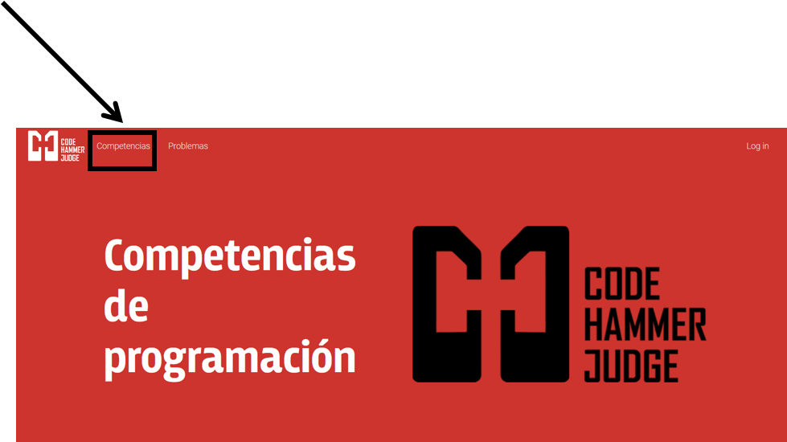Seleccione la opción "+" que se encuentra en la parte superior derecha
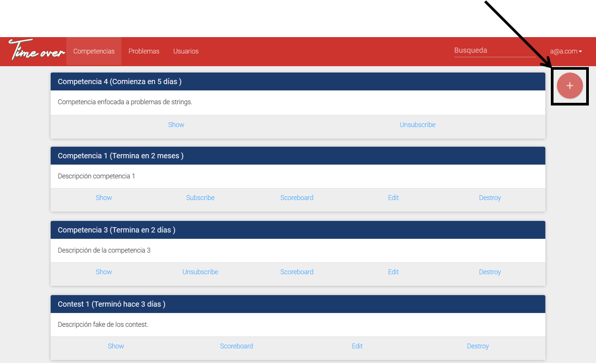Se visualizará un formulario para la creación de la competencia con los siguientes campos:
El título que se le dará a la competencia, utilizar palabras clave es recomendado para llamar la atención a los competidores adecuados.
La descripción de la competencia dará a los competidores una idea más clara del propósito de la competencia.
La dificultad modifica el nivel de realimentación que reciben los competidores al fallar una competencia
Indica en cual caso de prueba falló y cuál era la salida esperada de la solución.
Indica en cuál caso de prueba falló la solución.
Indica únicamente el motivo por el cual no ha aprobado la solución.
Fecha de inicio y de finalización de la competencia, el intervalo mínimo de tiempo es de 1 hora.
La lista de los problemas disponibles que se pueden incluír en la competencia.
Para actualizar una competencia, seleccione la opción "Competencias" en la barra de navegación:
Seleccione la opción "Editar" de la competencia deseada. Esta opción solo se encuentra disponible para competencias que no han iniciado.
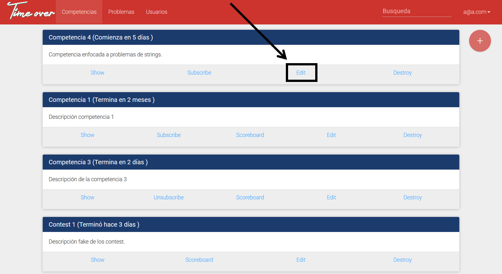Se mostrará el formulario de edición de competencia
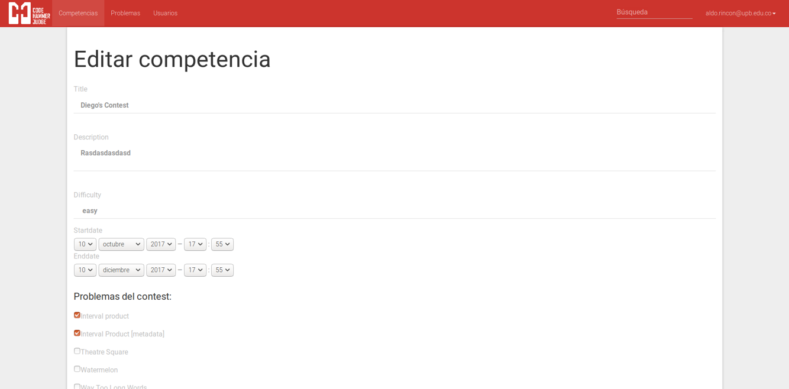Para cerrar una competencia, seleccione la opción "Competencias" en la barra de navegación:
Seleccione la opción "Cerrar" de la competencia deseada. Esta opción solo se encuentra disponible para competencias que no han iniciado.
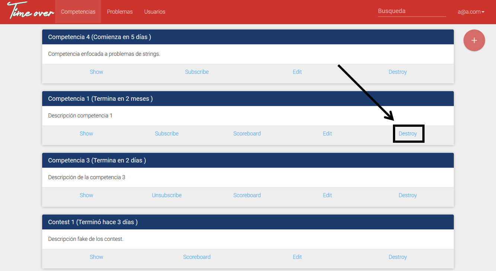Para crear un problema, seleccione la opción "Problemas" en la barra de navegación:
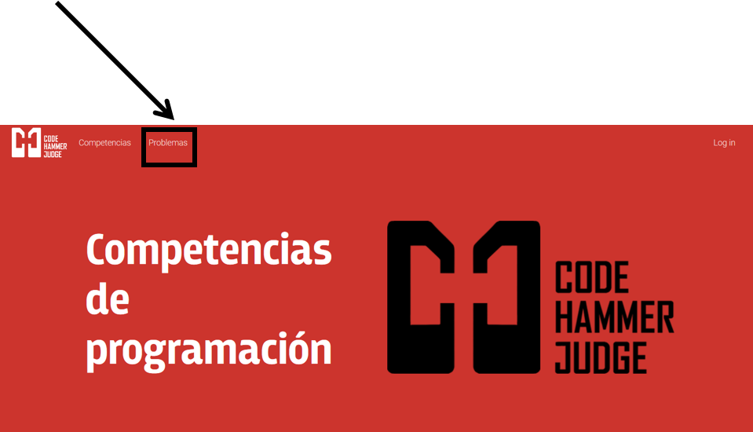Seleccione la opción "+" que se encuentra en la parte superior derecha
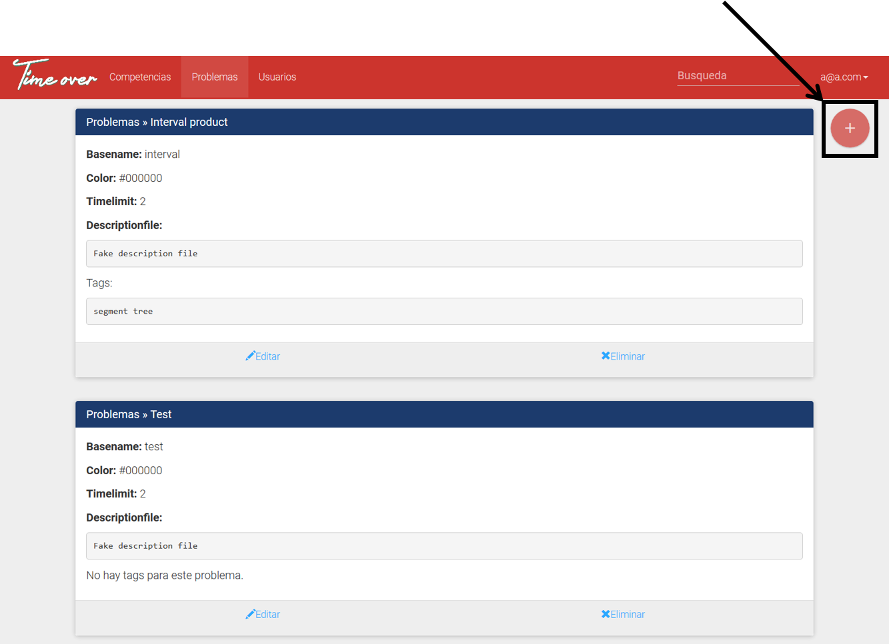Se visualizará un formulario para la creación del problema con los siguientes campos:
Permitirá seleccionar entre crear un problema en la plataforma o vincular problema a codeforces.
El nombre del problema.
El nombre que identificará al problema en la evaluación, este nombre será utilizado al evaluar los nombres de los archivos de solución enviados.
Color que identificará los problemas en la tabla de puntuaciones.
Tiempo límite de ejecución del que dispondrán las soluciones enviadas.
Archivo que permitirá a los competidores entender los requerimientos del problema, usualmente contiene el enunciado y los ejemplos de entradas y salidas esperadas
Caracteres que se utilizarán como separador en los casos de prueba en los archivos de entradas dadas y salidas esperadas. Es requerido para las dificultades diferentes a "Estricto".
Archivo que contiene las entradas que se entregarán a las soluciones de los competidores.
Archivo que contiene las salidas esperadas al ingresar las entradas del problema a las soluciones de los competidores.
Tags que facilitarán la búsqueda de los problemas. Se recomienda utilizar tags apropiados al tipo de problema creado.
Para actualizar un problema, seleccione la opción "Problemas" en la barra de navegación:
Seleccione la opción "Editar" del problema deseado.
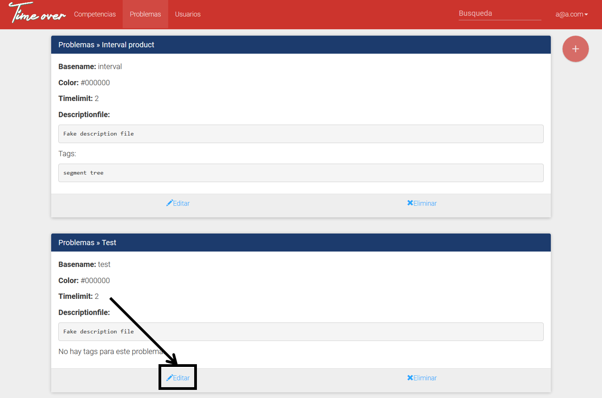Se mostrará el formulario de edición de problemas
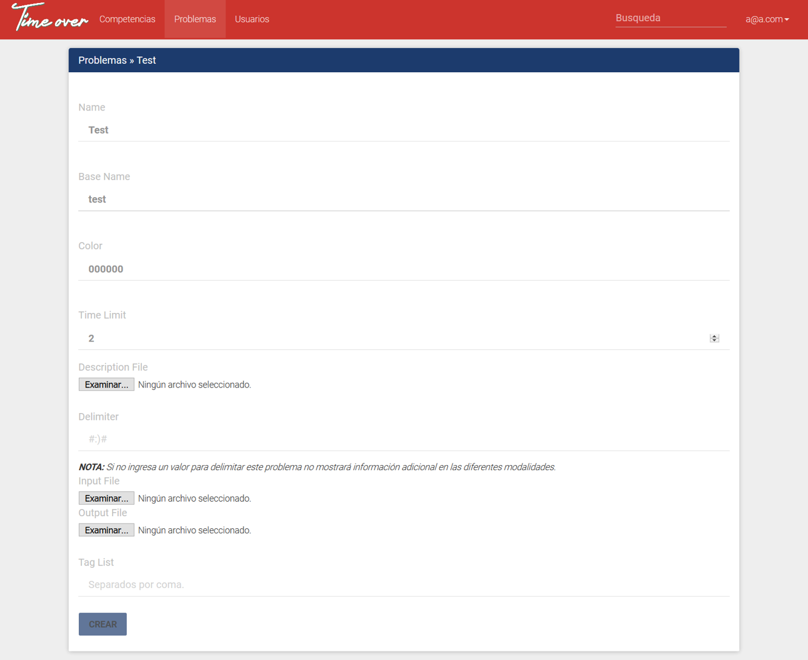Para eliminar un problema, seleccione la opción "Problemas" en la barra de navegación:
Seleccione la opción "Eliminar" del problema deseado.
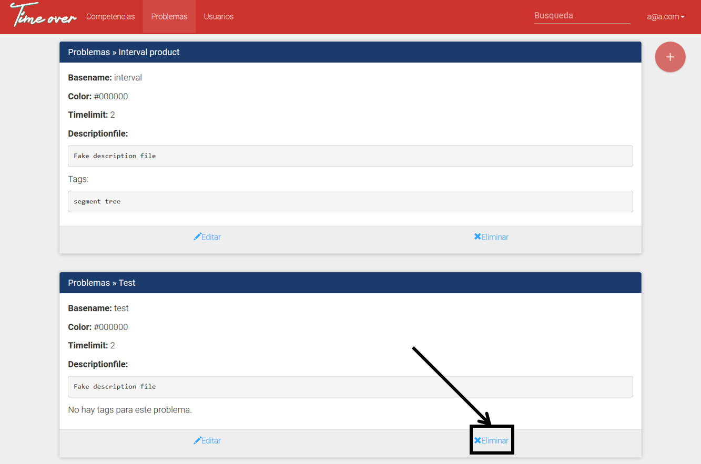Para administrar los permisos de los usuarios, seleccione la opción "Usuarios" en la barra de navegación:
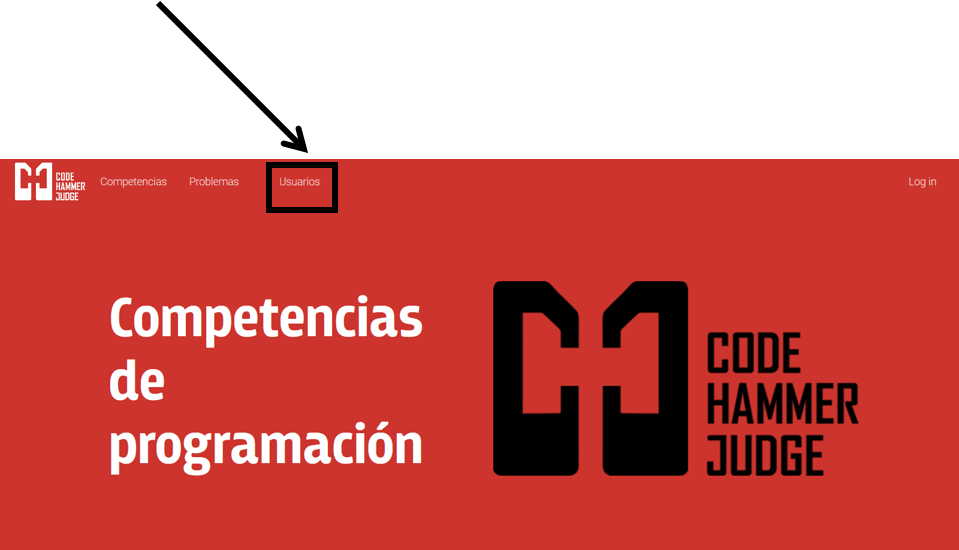Los usuarios en el sistema se encontrarán listados, mostrando sus permisos actuales:
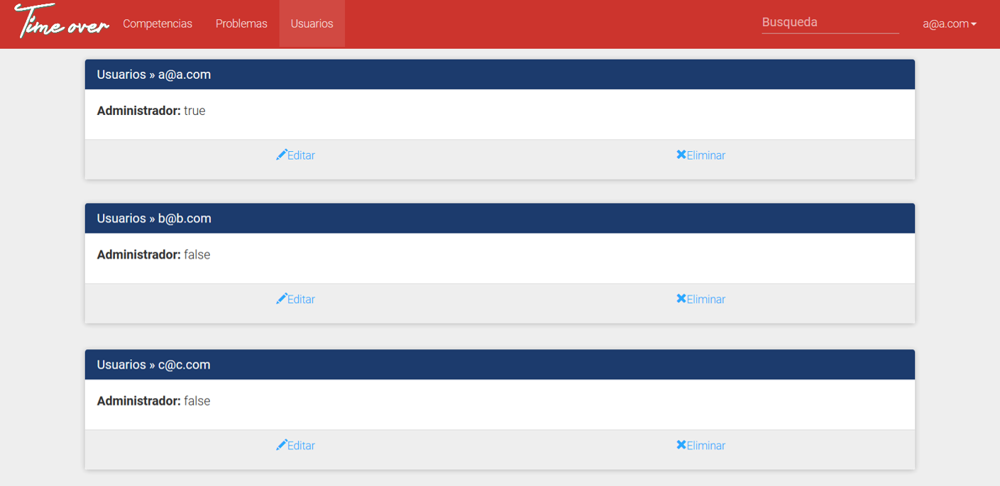La opción "Editar" permite cambiar los permisos del usuario seleccionado:
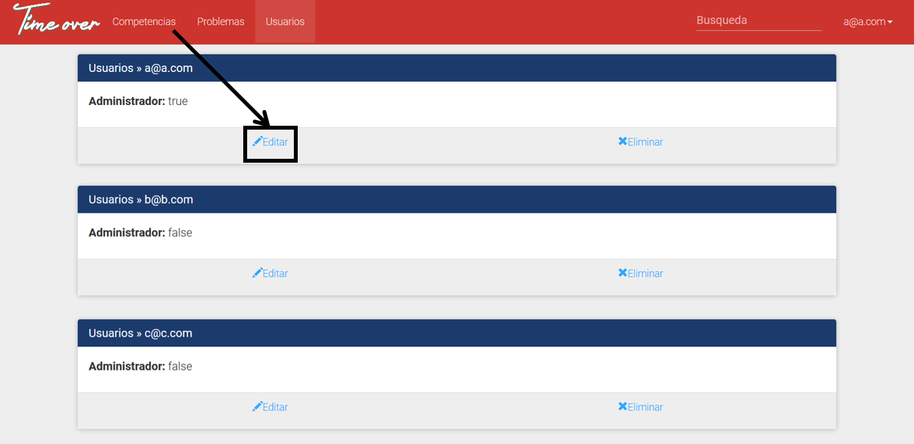 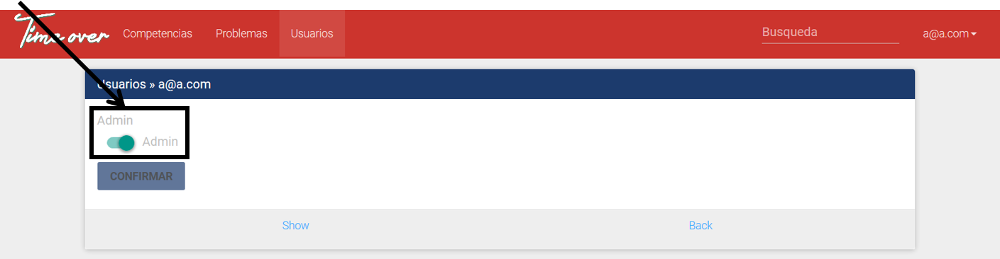